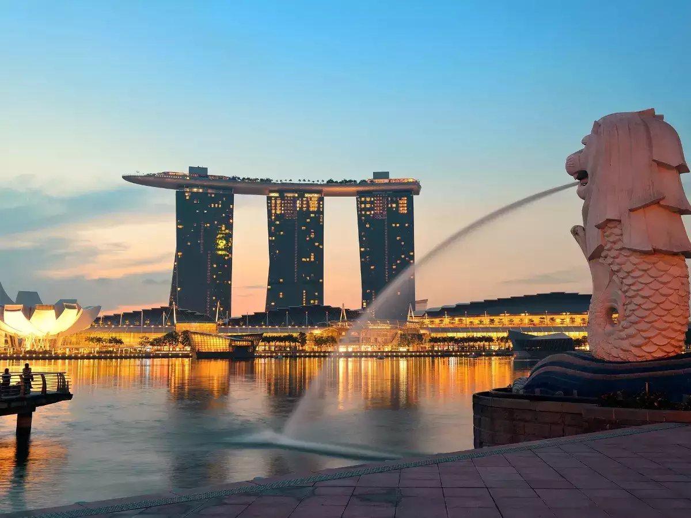

Popular Destinations

New York
New York is known for Times Square, a bustling commercial and entertainment hub famous for its bright lights, Broadway theaters, and iconic New Year's Eve ball drop.

Paris
Paris has a long history of romantic representation in numerous movies, books, shows, and art. Those associations, of course, contribute to its notoriety as the City of Love.

Singapore
Singapore is known variously as the “Lion City” or “Garden City,” the latter for its many parks and tree lined streets has also been called “instant Asia”.